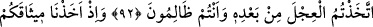

LÂ’NETİN HÜKMÜ
89. Daha önce kâfirlere karşı zafer isterlerken kendilerine Allah katından
ellerindeki (Tevrât’ı) doğrulayan bir kitap gelip de (Tevrât’tan) bilip öğrendikleri
gerçekler karşılarına dikilince onu inkâr ettiler. İşte Allah’ın lâ’neti böyle
inkârcılaradır.
90. Allah’ın kullarından dilediğine peygamberlik ihsan etmesini kıskandıkları için
Allah’ın indirdiğini (Kur’ân’ı) inkâr ederek kendilerini harcamaları ne kötü bir
şeydir! Böylece onlar, gazab üstüne gazaba uğradılar. Ayrıca kâfirler için alçaltıcı
bir azâb vardır.
91. Kendilerine: Allah’ın indirdiğine îmân edin, denilince: Biz sadece bize
indirilene (Tevrât’a) inanırız, derler ve ondan başkasını inkâr ederler. Halbuki o
Kur’ân, kendi ellerinde bulunan Tevrât’ı doğrulayıcı olarak gelmiş hak kitaptır. (Ey
Muhammed!) Onlara: Şayet siz gerçekten inanıyor idiyseniz daha önce Allah’ın
peygamberlerini neden öldürüyordunuz? deyiver.
92. Andolsun Mûsâ size apaçık mûcizeler getirmişti. Sonra onun ardından,
zâlimler olarak buzağıyı (tanrı) edindiniz.
93. Hatırlayın ki, Tûr dağının altında sizden söz almış: Size verdiklerimizi
kuvvetlice tutun, söylenenleri anlayın, demiştik. Onlar: İşittik ve isyan ettik,
dediler. İnkârları sebebiyle kalblerine buzağı sevgisi dolduruldu. De ki: Eğer